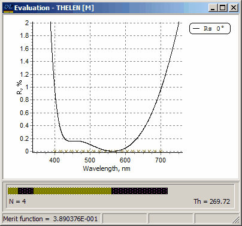

Exercise 5. Refinement of Dr. A.Thelen’s AR coating
Exercise 5. Refinement of Dr. A.Thelen’s AR coating
Problem directory EX5 starts Illustration of the application of OptiLayer refinement methods. In SF Mode you need to use Import Problem Directory command (File Menu).
Load GLASS substrate, MGF2 and ZRO2 layer materials, THELEN design (these files are exactly the same as in the Exercise 4).
Open Evaluation window and specify the axis range for the reflectance plot from 0 to 2%. Note the text “Merit function = N/A” in the bottom left corner of the Evaluation window.
Go to the Target database and load the file Ar-vis. This file specifies zero target reflectance in the spectral range from 400 to 700nm. You can observe how this target is specified using the Edit option in the Target database.
Look at the Evaluation window and note that the merit function value has been displayed in the status bar in the left bottom corner of this window. Merit function is automatically generated by OptiLayer as soon as a target file is loaded. Merit function estimates the difference between actual and target spectral characteristics. Note that yellow crosses have appeared in the Evaluation window, they mark our target function. Note also that the scales have been changed both for x- and y-axis. The wavelength range is automatically chosen by OptiLayer when a target function is loaded into memory, it is 20% wider than the spectral region specified in the target function file. The range of the y-axis is usually from 0 to 100%. These settings are easily changed with the help of Options dialog, change the range of the y-axis to be from 0 to 2%.
Go to the Substrate database and load another substrate with the name SUB1.64. Dr. A.Thelen’s design on the new substrate gives higher value of the merit function, because the coating was not designed for the substrate of this index. Go to the Synthesis menu and start the Refinement. The design will be adjusted to the new substrate in a few iterations. The reflectance of the refined design should look as follows.
